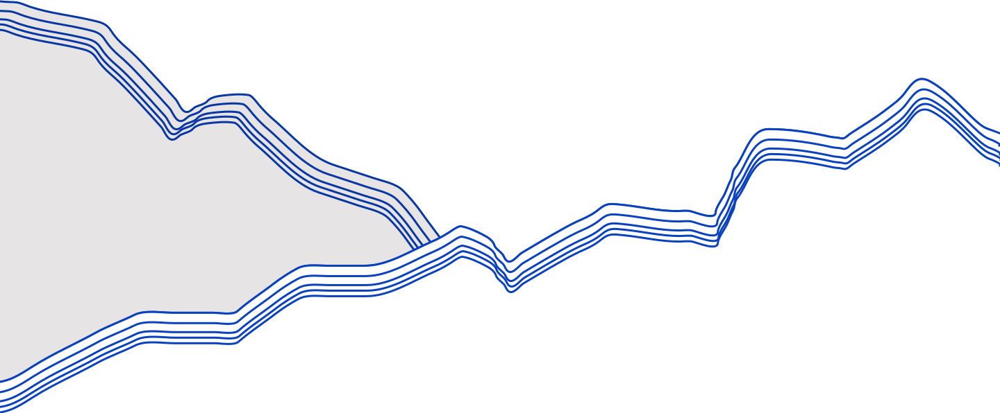

PORTFOLIE
Tema 1
Introuge
I tema 1 fik vi en introduktion til multimediedesign faget. Her skulle vi sammen med en gruppe lave vores egen lille intro video. Vores intro video blev inspireret af tv-serien “The Office”.